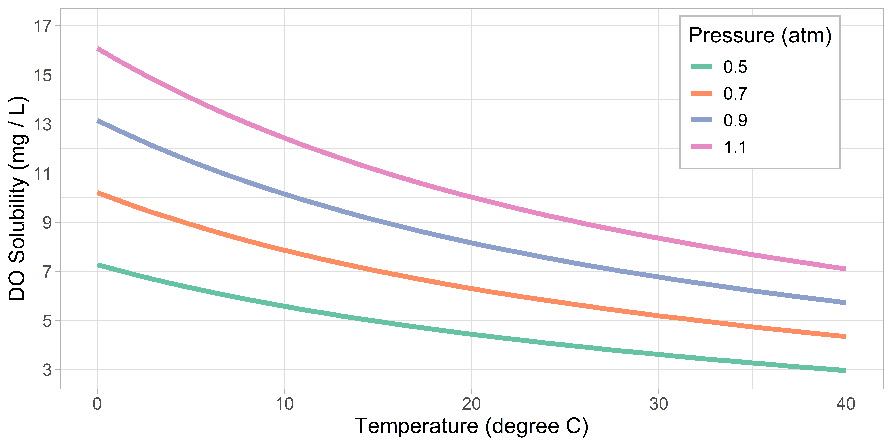

Overview
Dissolved oxygen (DO) is a measure of the amount of gaseous oxygen dissolved in water, which is a key water quality parameter for much aquatic life (Santana et al. 2017). There are many drivers of DO variability, including biological activity (e.g., photosynthesis, respiration, plankton blooms), physical processes (e.g., air-sea exchange, tidal events, meteorology, seasonal stratification), and chemical reactions (e.g., oxidation of organic material) (Santana et al. 2017; IOOS 2018). DO is typically higher near the surface, where it is produced by photosynthetic organisms and is in flux to maintain equilibrium with the atmosphere (refs). DO is distributed to deeper waters by vertical mixing and diffusion.
Units
Dissolved oxygen can be measured in different units, including concentration and percent saturation (Bittig 2018). For fisheries and aquaculture applications, concentration is often reported in milligrams of gaseous oxygen per litre of water (mg / L) (Bittig et al. 2018), which is equivalent to parts per million (ppm).
Percent saturation describes how “full” of oxygen the water is (Equation 1). The maximum amount of oxygen that can be dissolved depends on the water temperature, salinity, and barometric pressure (Figure 1, Figure 2). For units of concentration, this theoretical maximum is called the DO solubility, and is typically calculated from equations based on those developed by Benson and Krause (1980, 1984) and Garcia and Gordon (1992)1 Cloern (1999). The percent saturation is the measured DO concentration as fraction of the DO solubility (Equation 1).
\[ DO_{\%saturation} = 100 * DO_{concentration}/DO_{solubility} \tag{1}\]
Percent saturation can also be calculated from partial pressures, although DO is not typically expressed in pressure units (Equation 2). In this case, the maximum amount of DO that can be dissolved is the partial pressure of oxygen in the air (\(pO_{2, air}\)), as calculated in SCOR WG 142 (Bittig 2018). The actual amount of DO in the water is measured by the sensor in corresponding pressure units (\(pO_2\)).
\[ DO_{\%saturation} = 100 * pO_2 / pO_{2, air} \tag{2}\]

Conversion between DO units can be non-trivial (Bittig 2018). DO solubility is used to convert between units of concentration and percent saturation, which means estimates of temperature, salinity, and pressure are required. For the most accurate conversion, each DO observation should have a corresponding observation of these water properties. However, this is not always feasible, particularly for long deployments. Single value estimates can be used to convert data from the whole deployment (refs)
Supersaturation
When the measured DO concentration is greater than the DO solubility (\(DO_{\%saturation} > 100 \%\)), the water is considered “supersaturated”. Supersaturated water is typically caused by photosynthetic organisms, which are a large source of pure oxygen to the water column (YSI (2019); Craig and Hayward (1987))2. Additionally, a rapid increase in temperature can decrease the DO solubility without altering the measured DO concentration, resulting in saturation values greater than 100 %3. The excess DO will eventually diffuse into the atmosphere, but this process is not instantaneous (ref).
Biofouling
A major challenge of accurately measuring DO near the surface4 is the growth of aquatic organisms on and around the sensor, called biofouling (OOI 2022). Biofouling can range from a small film of algae, to large colonies/growths of seaweed, to colonies of mollusks Insert CMAR photos. The daily cycle of photosynthesis (oxygen production during the day) and respiration (oxygen consumption, relatively higher at night) of these organisms can cause extreme variability in the DO measurements. The recorded DO therefore reflects the microcosm growing on the sensor, but not the ambient environment. This signal can occur within a month or two of deployment (OOI 2022), depending on time time of year and location. Other impacts of biofouling can include signal attenuation, sensor drift, and decreased mooring depth from the additional weight (IOOS 2018).
Anti-fouling strategies can be employed to reduce fouling and improve data quality, although these present other challenges. Sensors can be cleaned regularly to remove growth (e.g., every 2 - 4 weeks), although this may not be feasible for many reasons (e.g., cost and time constraints). Some sensors have built-in anti-fouling mechanisms such as wipers (PME 2023) or UV light (Mariscope 2020) to reduce growth, but these sensors tend to be expensive and have reduced battery life. Copper (a natural biocide) tape, wire, or screens around the sensor can reduce fouling for several weeks, although this can also become expensive and may not be sufficient for longer deployments (YSI 2023).
Other Challenges
Quality control of DO data can also be challenging and time consuming. There is a broad range of “reasonable” DO values, depending on the location, depth, season, oceanographic conditions, etc. Rapid and extreme variability may reflect the natural processes that are of interest to the monitoring program, including phytoplankton blooms, storms, and upwelling. However, this signal could also be a result of biofouling. To identify the most likely driver, further investigation is required. For example, the timing of the variability with respect to sensor deployment, time of year, and co-located variables could provide insight into the reliability of the measurements. It is also difficult to detect and quantify sensor drift over time for a single deployment. Consecutive deployments at the same station can highlight drift (IOOS 2018).
References
Benson, Bruce B., and Daniel Krause Jr. 1980. “The Concentration and Isotopic Fractionation of Gases Dissolved in Freshwater in Equilibrium with the Atmosphere. 1. Oxygen.” Journal Article. Limnology and Oceanography 25 (4): 662–71. https://doi.org/https://doi.org/10.4319/lo.1980.25.4.0662.
———. 1984. “The Concentration and Isotopic Fractionation of Oxygen Dissolved in Freshwater and Seawater in Equilibrium with the Atmosphere1.” Journal Article. Limnology and Oceanography 29 (3): 620–32. https://doi.org/https://doi.org/10.4319/lo.1984.29.3.0620.
Bittig, Henry C. 2018. “Recommendations on the Conversion Between Oxygen Quantities for Bio‐argo Floats and Other Autonomous Sensor Platforms.”
Bittig, Henry C., Arne Körtzinger, Craig Neill, Eikbert van Ooijen, Joshua N. Plant, Johannes Hahn, Kenneth S. Johnson, Bo Yang, and Steven R. Emerson. 2018. “Oxygen Optode Sensors: Principle, Characterization, Calibration, and Application in the Ocean.” Journal Article. Frontiers in Marine Science 4 (429). https://doi.org/10.3389/fmars.2017.00429.
Cloern, James E. 1999. “The Relative Importance of Light and Nutrient Limitation of Phytoplankton Growth: A Simple Index of Coastal Ecosystem Sensitivity to Nutrient Enrichment.” Journal Article. Aquatic Ecology 33 (1): 3–15. https://doi.org/10.1023/A:1009952125558.
Craig, H., and T. Hayward. 1987. “Oxygen Supersaturation in the Ocean: Biological Versus Physical Contributions.” Journal Article. Science 235 (4785): 199–202. https://www.science.org/doi/10.1126/science.235.4785.199.
IOOS. 2018. “QARTOD Manual for Real-Time Quality Control of Dissolved Oxygen Observations.” https://ioos.noaa.gov/ioos-in-action/manual-real-time-quality-control-dissolved-oxygen-observations/.
Mariscope. 2020. “UV Light Tackles Problematic Underwater Growth.” Magazine Article. International Ocean Systems. https://www.mariscope.de/2020/06/01/uv-light-tackles-problematic-underwater-growth/.
OOI. 2022. “OOI Biogeochemical Sensor Data: Best Practices & User Guide.” https://repository.oceanbestpractices.org/bitstream/handle/11329/2112/OOI%20Biogeochemical%20Sensor%20Data%20Best%20Practices%20and%20User%20Guide.pdf?sequence=1&isAllowed=y.
PME. 2023. “miniWIPER.” Pamphlet. https://www.pme.com/wp-content/uploads/2016/03/miniWIPER_061317-1.pdf.
Santana, Rafael, Guilherme Lessa, John Haskins, and Kerstin Wasson. 2017. “Continuous Monitoring Reveals Drivers of Dissolved Oxygen Variability in a Small California Estuary.” Journal Article. Estuaries and Coasts 41. https://doi.org/10.1007/s12237-017-0329-8.
YSI. 2019. “Environmental Dissolved Oxygen: VALUES GREATER THAN 100.” https://www.ysi.com/file%20library/documents/technical%20notes/t602-environmental-dissolved-oxygen-values-above-100-percent-air-saturation.pdf.
———. 2023. “Anti-Fouling Copper Tape.” https://www.ysi.com/accessory/id-616189/anti-fouling-copper-tape.
Footnotes
The USGS has an online DO solubility calculator based on the Benson and Krause equations (DOTABLES). The CMAR R package
docalcsprovides functions for calculating solubility and correction factors based on Benson and Krause and Garcia and Gordon. See the CMAR DO cheat sheet for more information about these equations.↩︎This is important because DO sensors are typically calibrated in air-saturated water (or water-saturated air). Air is only ~ 21 % oxygen, so there are nearly 5 times more \(O_2\) molecules in pure oxygen compared to the same volume of air. This means that a sensor reading from air-saturated water would be 100 %, while a reading from pure oxygen-saturated water would be ~ 500 %. Photosynthesis can therefore account for very high percent saturation measurements (YSI 2019).↩︎
For example, consider a DO concentration of 10 mg / L in freshwater at 10 degree C and 1 atm. The DO solubility is 11.29 mg / L (Figure 1), and so the percent saturation is 10 / 11.29 = 88.6 %. If the temperature during the day warmed to 20 degrees C, the DO solubility would decrease to 9.09 mg / L (Figure 1). The measured concentration remains 10 mg / L, and so the percent saturation is now 10 / 9.09 = 110 %.↩︎
in the euphotic zone↩︎